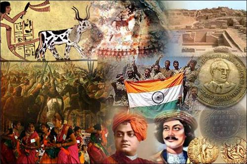

Stretching 3,100 miles (5,000 kilometers) from east to west and 3,400 miles (5,500 kilometers) from north to south, China is a large country with widely varying landscapes. Its territory includes mountains, high plateaus, sandy deserts, and dense forests.
One-third of China's land area is made up of mountains. The tallest mountain on Earth, Mount Everest, sits on the border between China and Nepal.
China has thousands of rivers. The Yangtze and the Yellow Rivers are the most important. At 3,915 miles (6,300 kilometers) long, the Yangtze is the world's third largest river.
Cultural exchanges between India and its neighbors are deeply rooted in shared histories, religions, and traditions. Buddhism, for example, spread from India to countries like Nepal, Bhutan, Sri Lanka, and Myanmar, fostering cultural ties across the region. Similarly, Hinduism has influenced the cultural landscape of Nepal, Sri Lanka, and Bangladesh.
Historically, India's relations with its neighbors have been shaped by colonial legacies, border disputes, and independence struggles. The legacy of British colonialism left a complex legacy, particularly in relations between India and Pakistan. The partition of British India in 1947 led to the creation of Pakistan, resulting in one of the most contentious borders in the world and subsequent conflicts, notably over the region of Kashmir.
Diplomatic relations between India and its neighbors are multifaceted, ranging from cooperation in areas such as trade, security, and cultural exchange to tensions over territorial disputes and geopolitical rivalries. India's "neighborhood first" policy underscores its commitment to strengthening ties with neighboring countries, prioritizing regional stability and economic cooperation.
Regional cooperation initiatives, such as SAARC and the Bay of Bengal Initiative for Multi-Sectoral Technical and Economic Cooperation (BIMSTEC), aim to enhance economic integration and collaboration among South Asian countries. However, progress has been hindered by bilateral disputes, political tensions, and divergent priorities among member states.
In recent years, India has pursued initiatives like the "Act East" policy to deepen engagement with Southeast Asian countries, leveraging cultural, economic, and strategic ties to enhance regional cooperation. Similarly, the development of infrastructure projects like the India-Myanmar-Thailand Trilateral Highway aims to bolster connectivity and economic integration in the region.
Overall, India's relations with neighboring countries are characterized by a complex interplay of historical, cultural, political, and economic factors. While challenges persist, there are ample opportunities for cooperation and collaboration, which are essential for fostering peace, stability, and prosperity in South Asia and beyond.